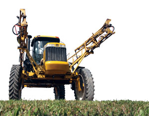
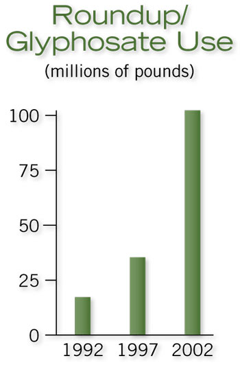

To protect our health, the U.S. Environmental Protection Agency (EPA) sets maximum legal residue levels for every pesticide, for dozens of crops. But a new study in the respected journal Toxicology has shown that, at low levels that are currently legal on our food, Roundup could cause DNA damage, endocrine disruption and cell death. The study, conducted by French researchers, shows glyphosate-based herbicides are toxic to human reproductive cells.
The potential real-life risks from this are infertility, low sperm count, and prostate or testicular cancer. But, “Symptoms could be so subtle, they would be easy to overlook,” says Theo Colborn, president of The Endocrine Disruption Exchange. “Timing is of critical importance. If a pregnant woman were to be exposed early in gestation, it looks like these herbicides could have an effect during the sexual differentiation stage. They really lock in on testosterone.” The bottom line is more research is needed before we can fully understand the effects of glyphosate exposure.
The researchers’ most disturbing findings were not only the cytotoxic and hormonal responses to low-dose exposures, but the fact that the “active” ingredient - glyphosate - had much less of a toxic impact alone than the branded chemical mixtures sold to homeowners and farmers nationwide.
Solvents and surfactants, legally considered “inert ingredients,” are mixed with glyphosate in products such as Roundup weed killer to create chemical formulations that increase mobility and more direct access to the cells. “Those same factors that aid penetration into a plant, also aid penetration into the skin,” says Vincent Garry, professor emeritus of pathology at the University of Minnesota. “These chemicals are designed to kill cells.”
Despite being termed “inert,” these added (and usually secret) ingredients are anything but benign, as the manufacturers have claimed for decades. The new French research found the surfactants not only amplify the effects of glyphosate, but glyphosate also amplifies the effects of the surfactants. Basically, one plus one equals something larger than two.
Herbicide manufacturers are subject to fewer rules in the testing of inert ingredients than they are for active ingredients, explains Caroline Cox, research director at the Center for Environmental Health in Oakland, Calif. “The tests the EPA requires for inert ingredients cover only a small range of potential health problems,” Cox says. “Testing for birth defects, cancer and genetic damage are required only on the active ingredients. But we’re exposed to both.”
Glyphosate, mostly in the form of Roundup products manufactured by the Monsanto Co., has been widely used in the United States since the 1970s. Today, we spray more than 100 million pounds on our yards and farms every year, making it the most popular of the Monsanto chemicals. Monsanto continues to assure us its product is safe. “It’s used to protect schools,” a Monsanto spokesperson told Scientific American. Protect schools?! From what, killer weeds?
Glyphosate use has skyrocketed in recent years because of the widespread adoption of genetically modified corn, soy and cotton varieties that Monsanto developed to be resistant to glyphosate, according to the Center for Food Safety. Although the companies promoted glyphosate-resistant crops as a way to reduce herbicide use, there’s actually been a sharp increase in use on corn, soybeans and cotton since 2002, thanks to the emergence of resistant weeds. Farmers are battling glyphosate-resistant weeds with more glyphosate and other herbicides.
Most of the food we eat that contains corn or soy was sprayed with glyphosate herbicide, and we’re being exposed to higher and higher levels of residue. In response to petitions from Monsanto, the EPA has approved up to 20-fold increases in the legal residue limits for food crops.
“Our bodies are gigantic spider webs of chemical communications that work in the parts-per-trillion range,” says Warren Porter, professor of zoology and environmental toxicology at the University of Wisconsin. “When you put so-called ‘insignificant’ amounts of toxic chemicals into the mix, you have a molecular bull in a china shop. The possibilities for impact are endless.”
In response to growing public concerns, the EPA is getting ready to launch new tests on 67 potential endocrine disruptors. Critics say the proposed tests will cover only a portion of organs in the endocrine system, but supporters say it is at least a step in the right direction.
|
 MATTHEW T. STALLBAUMER Widespread planting of GMO crops has led to a sharp increase in Roundup use. |
 MATTHEW T. STALLBAUMER |
|